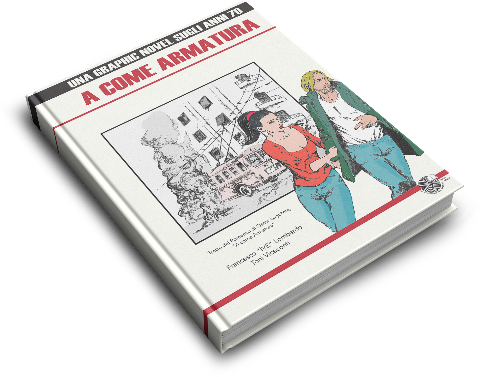

A come Armatura
A come Armatura. Una storia degli anni ’70 (La Memoria del Mondo Editrice, 2014) è il romanzo d’esordio di Oscar Logoteta: la storia di una vita, la storia di Nino. Come in una canzone di De Gregori — “Nino non aver paura di tirare un calcio di rigore” — qui di rigori non se ne tirano, ma di paura se ne parla. La paura di sapere, di scegliere, di amare, di diventare grandi, di morire, di credere in qualcosa più grande di noi, o semplicemente di essere dalla parte giusta.
Antonino Laganà ha sedici anni nel ’77. Cresce a Milano tra il collettivo del liceo Berchet e il gruppo scout Agesci Borgolombardo 1. Attorno a lui ruotano Mimmo (Domenico Basile, amico d’infanzia), il padre Saverio — operaio all’Alfa, immigrato dal Sud negli anni Cinquanta — la madre, lo zio Carlo, professore a Reggio Calabria, e Giorgia, compagna di Noviziato. La sua vita cambia in un pomeriggio di maggio del 1977, in via De Amicis.
La suggestione del romanzo nasce da una foto: l’autonomo Giuseppe Memeo in via De Amicis il 14 maggio 1977, busto caricato in avanti, volto coperto, P38 impugnata a due mani. Accanto a lui e ad altri trecento autonomi — Senza Tregua, Rosso, Casoretto — c’era anche un ragazzo, Maurizio Azzollini, sedicenne e scout Agesci a Milano. Gli anni di piombo: stragi, lotte armate, attentati, troppi morti inutili. Nino viene accompagnato, quasi inconsapevole, in una delle pagine più violente e controverse della storia italiana.
Gli anni 70, quando la Spada ha tagliato la testa a un’intera generazione

Nel 2016, ispirata dal romanzo, nasce la graphic novel omonima: disegni di Toni Viceconti, scrittura di Francesco “IVE” Lombardo. Intorno al progetto cresce una soundtrack con artisti della scena hip-hop alternativa milanese — Mastino, Kabo, Kiave e altri. Dalla colonna sonora: “Maggio del ’74” di Mastino e il video “Valzer 77” di Kabo.
È possibile acquistare sia il romanzo che la graphic novel di A come Armatura direttamente sul sito della casa editrice, La Memoria del Mondo Editrice.